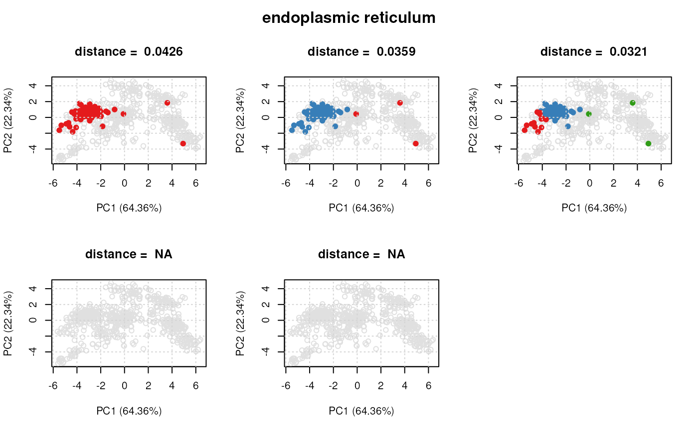
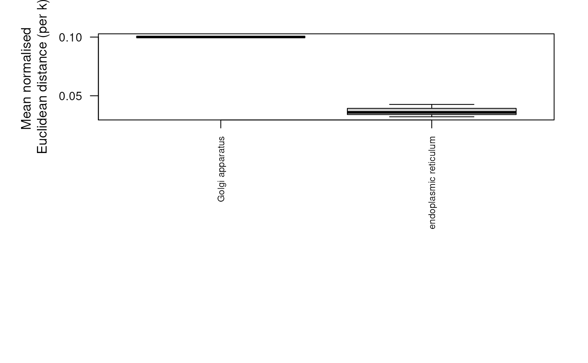

R/clusterdist-functions.R
clustDist.RdThis function computes the mean (normalised) pairwise distances for pre-defined sets of proteins.
clustDist(object, k = 1:5, fcol = "GOAnnotations", n = 5, verbose = TRUE, seed)
| object | An instance of class |
|---|---|
| k | The number of clusters to try fitting to the protein set.
Default is |
| fcol | The feature meta-data containing matrix of protein sets/
marker definitions. Default is |
| n | The minimum number of proteins per set. If protein sets
contain less than |
| verbose | A logical defining whether a progress bar is displayed. |
| seed | An optional seed for the random number generator. |
An instance of "ClustDistList" containing
a "ClustDist" instance for every protein set, which
summarises the algorithm information such as the number of k's tested
for the kmeans, and mean and normalised pairwise Euclidean distances
per numer of component clusters tested.
The input to the function is a MSnSet dataset
containing a matrix appended to the feature data slot
identifying the membership of protein instances to
a pre-defined set(s) e.g. a specific Gene Ontology term etc.
For each protein set, the clustDist function (i)
extracts all instances belonging to the set, (ii) using
the kmeans algorithm fits and tests k = c(1:5)
(default) cluster components to each set, (iii) calculates
the mean pairwise distance for each k tested.
Note: currently distances are calcualted in Euclidean space, but other distance metrics will be supported in the future).
The output is a list of ClustDist objects,
one per information cluster. The ClustDist
class summarises the algorithm information such as the number of k's
tested for the kmeans, and mean and normalised pairwise Euclidean
distances per numer of component clusters tested. See ?ClustDist
for more details.
For class definitions see "ClustDistList"
and "ClustDist".
Lisa Breckels
library(pRolocdata) data(dunkley2006) par <- setAnnotationParams(inputs = c("Arabidopsis thaliana genes", "Gene stable ID"))#> Using species Arabidopsis thaliana genes (TAIR10)#> Using feature type Gene stable ID(s) [e.g. AT1G01010]#> Connecting to Biomart...## add protein sets/annotation information xx <- addGoAnnotations(dunkley2006, par) ## filter xx <- filterMinMarkers(xx, n = 50)#> Retaining 17 out of 178 in GOAnnotations#> Retaining 12 out of 17 in GOAnnotations## get distances for protein sets dd <- clustDist(xx)#> | | | 0% | |====== | 8% | |============ | 17% | |================== | 25% | |======================= | 33% | |============================= | 42% | |=================================== | 50% | |========================================= | 58% | |=============================================== | 67% | |==================================================== | 75% | |========================================================== | 83% | |================================================================ | 92% | |======================================================================| 100%## Extract normalised distances ## Normalise by n^1/3 minDist <- getNormDist(dd, p = 1/3) ## Get new order according to lowest distance o <- order(minDist) ## Re-order GOAnnotations fData(xx)$GOAnnotations <- fData(xx)$GOAnnotations[, o] if (interactive()) { pRolocVis(xx, fcol = "GOAnnotations") }